Bildnachweise
Danke an die Fotografinnen und Fotografen, deren Arbeit diese Website prägt.
Das Porträt, die Illustrationen zu meiner Masterarbeit, die Screenshots und die Diagramme stammen von mir, mit Ausnahme des Spielfotos in der Fußball-Illustration auf der Seite Masterarbeit. Diese Illustration enthält ein Foto unter CC BY-SA 4.0 und steht deshalb ebenfalls unter dieser Lizenz. Die übrigen Fotos stammen von Unsplash unter der Unsplash-Lizenz und von Wikimedia Commons unter den unten genannten Creative-Commons-Lizenzen. Fotos von Wikimedia Commons wurden für diese Website zugeschnitten und verkleinert; Fotos unter einer ShareAlike-Lizenz stehen weiterhin unter derselben Lizenz.
- Startseite, KI-EntwicklungFoto von Christopher Gower auf Unsplash, Unsplash-Lizenz.
- Startseite, angewandte ForschungFoto von Susan Q Yin auf Unsplash, Unsplash-Lizenz.
 Startseite, IT-AdministrationFoto von Jordan Harrison auf Unsplash, Unsplash-Lizenz.
Startseite, IT-AdministrationFoto von Jordan Harrison auf Unsplash, Unsplash-Lizenz.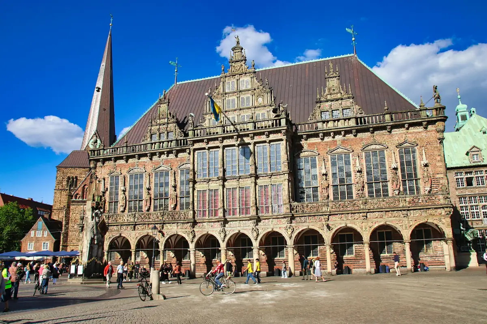
Über mich, KopfbereichFoto von Alain Rouiller auf Unsplash, Unsplash-Lizenz.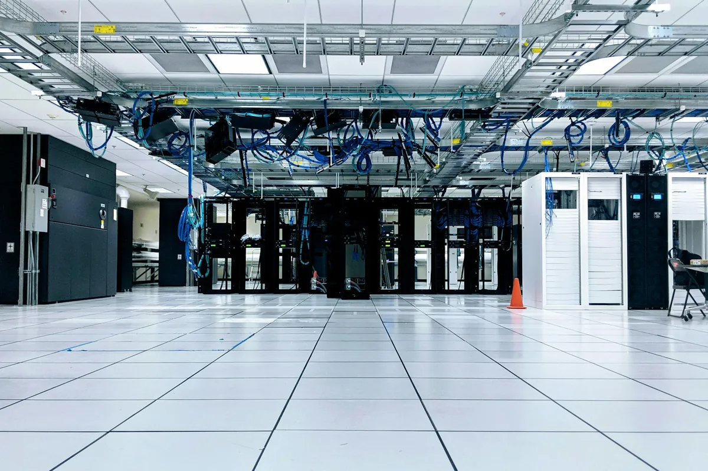
Erfahrung, KopfbereichFoto von Taylor Vick auf Unsplash, Unsplash-Lizenz.- Erfahrung, IT-AdministratorFoto von Kevin Ache auf Unsplash, Unsplash-Lizenz.
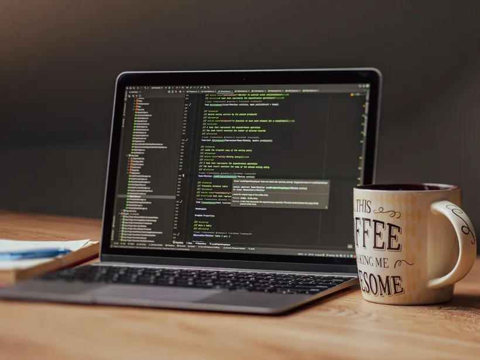
Erfahrung, ifibFoto von Daniil Komov auf Unsplash, Unsplash-Lizenz.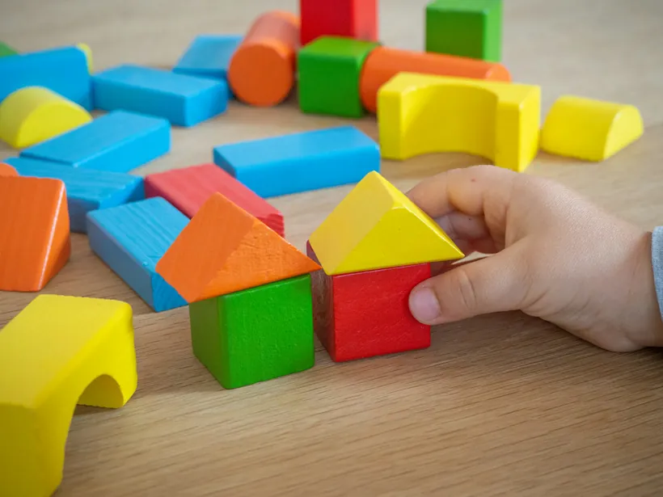
Erfahrung, BRISEFoto von Michał Bożek auf Unsplash, Unsplash-Lizenz.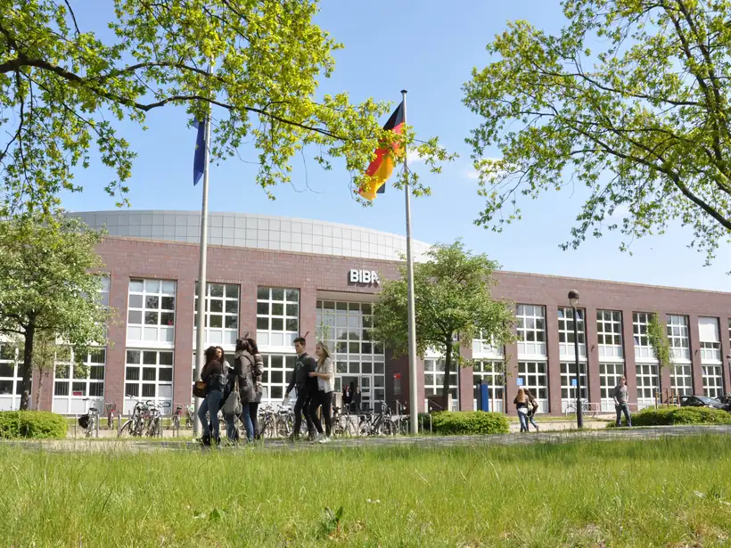
Erfahrung, BIBA„BIBA Bremen 20130515 1596“ von Sabine Nollmann, CC BY-SA 3.0, über Wikimedia Commons. Zugeschnitten und verkleinert.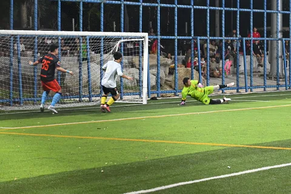
Masterarbeit, Foto in der Fußball-Illustration„DFC 5336 A tense moment as a striker fires a shot on goal while the goalkeeper dives to make the save during a nighttime amateur soccer match“ von PattayaPatrol, CC BY-SA 4.0, über Wikimedia Commons. Zugeschnitten und verkleinert.- Projekte, KopfbereichFoto von Chris Ried auf Unsplash, Unsplash-Lizenz.
- Projekte, CSS4ImpactFoto von AbsolutVision auf Unsplash, Unsplash-Lizenz.
- Projekte, Dokumenten-ChatFoto von Jonathan Kemper auf Unsplash, Unsplash-Lizenz.
- Projekte, IMPACT-PrototypenFoto von Nathan Dumlao auf Unsplash, Unsplash-Lizenz.
- Projekte, BachelorarbeitFoto von Carlos Muza auf Unsplash, Unsplash-Lizenz.
- Ausbildung, KopfbereichFoto von Rashid Tajuar auf Unsplash, Unsplash-Lizenz.
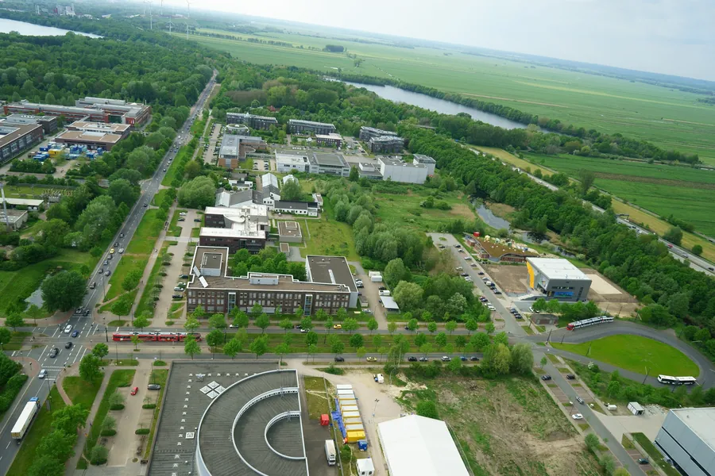
Ausbildung, Universität Bremen„Universität Bremen - Wendeschleife Linie 6 (Hochschulring vom Fallturm)“ von Jürgen Howaldt, CC BY-SA 4.0, über Wikimedia Commons. Zugeschnitten und verkleinert.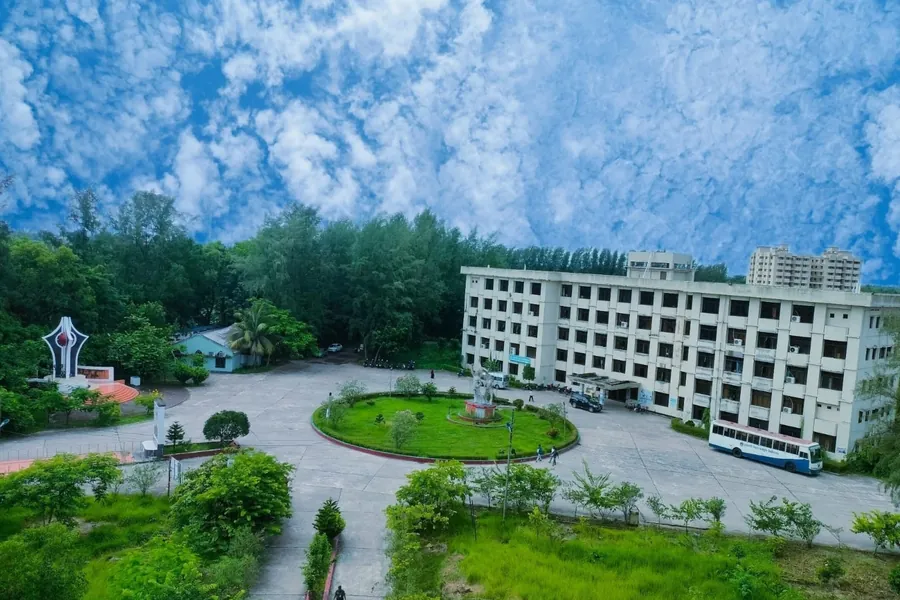
Ausbildung, NSTU„Administrative Building of Noakhali Science and Technology University“ von Aalim41, CC BY-SA 4.0, über Wikimedia Commons. Zugeschnitten und verkleinert.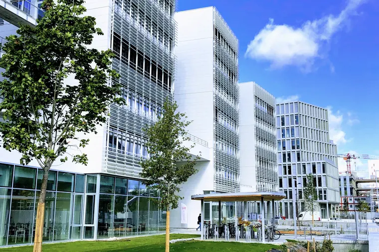
Ausbildung, Paris„Campus Condorcet Bâtiment Recherche Sud. - IHEAL“ von Guillermo Ramos Flamerich, CC BY-SA 4.0, über Wikimedia Commons. Zugeschnitten und verkleinert.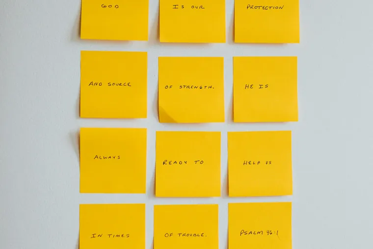
Ausbildung, Praxis Summer CampFoto von Nathan Dumlao auf Unsplash, Unsplash-Lizenz.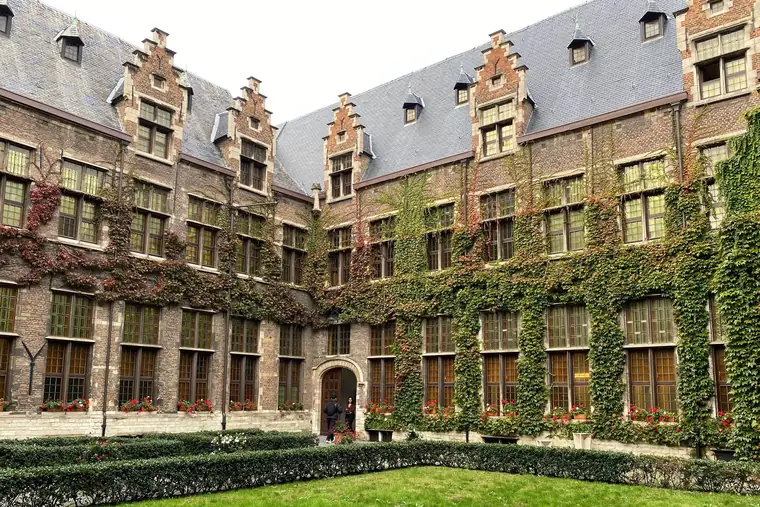
Ausbildung, Antwerpen„BEL Antwerpen, Universiteit Antwerpen, Stadscampus 010“ von -wuppertaler, CC BY 4.0, über Wikimedia Commons. Zugeschnitten und verkleinert.- Publikationen, KopfbereichFoto von Gülfer Ergin auf Unsplash, Unsplash-Lizenz.
 Kontakt, KopfbereichFoto von Alain Rouiller auf Unsplash, Unsplash-Lizenz.
Kontakt, KopfbereichFoto von Alain Rouiller auf Unsplash, Unsplash-Lizenz.
Schriften
Source Serif 4 und Source Sans 3 von Adobe unter der SIL Open Font License 1.1, auf dieser Website in reduzierter Form als „Hoque Serif“ und „Hoque Sans“ ausgeliefert. Die Lizenz steht in assets/fonts/OFL.txt.